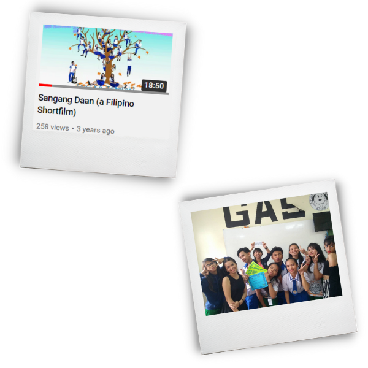

SHORT FILM TO REMEMBER

|
|
Plug Alert! Let me introduce you a short film written by yours truly. This is “Sangang Daan,” a story inspired on the poem “The Road Not Taken” by Robert Frost.
The story revolves in a classroom that has different kinds of students who struggle in studying but still has passion burning inside them.
Tricia and June, being the protagonists of the film will lead us to realize the different paths that you might be walking on right now or the one that you took for granted.
Well, these are the walkways of either being practical while setting aside your passion or being someone living in the moment while reaching your dreams.
“Sangang Daan” film was our project in one of our subject in Senior high school, this was created in 2018.
Filming was so hectic and was really fun at the same time since we are all friends in our group we called “Balasubuzz.”
We don’t even had a formal camera that we were using but only a cellphone, we would even use vacant classes just to shot a scene and go to fast food restaurants even its almost close.
Our teacher also organized a mini film awards day and we would never thought that we will win the “Best Short Film” and almost had hakot awards, everything was worth it.
The film was far from perfect, there were a lot of mistakes and room for improvements as newbies in film making, but the judges might have seen the meaning behind our craft and that’s what matter most.
The film became a door for us to realize things that we wanted to pursue, just like writing stories,
directing and film making itself but how funny that the things that was only made for the film are slowly becoming a mirror to the reality that we have right now who casted in the short film,
but how we wish that we’ll still be able to meet our dreams at the end of the road we took no matter how different the path is to each other.
|
|